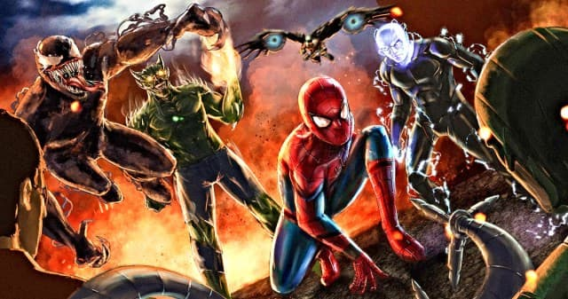

تاریخ اکران دو فیلم جدید از دنیای مرد عنکبوتی توسط سونی و مارول مشخص شد

سونی تاریخ اکران دو پروژه نا مشخص که مربوط به مارول و مرد عنکبوتی است را منتشر کرده است فیلم اول در 23 ژوئن 2023 مصادف با 2 تیر 1402 و فیلم دوم در تاریخ 6 اکتبر 2023 مصادف با 14 مهر 1402 اکران خواهند شد
بجز تاریخ اکران هیچ اطلاعات دیگری از این فیلم ها در دسترس نیست اما حدس هایی که در این باره زده شده شامل فیلم ونوم3 مرد عنکبوتی4 زن عنکبوتی گربه سیاه شش خبیث و یا فیلمی از کریون شکارچی است س.نی با توجه به فروش فوق العاده فیلم ونوم2 در گیشه حالا به دنبال دنیای سینمایی مارولی خود است و انتظار می رود فیلم های بیشتری در آینده منتشر شود.